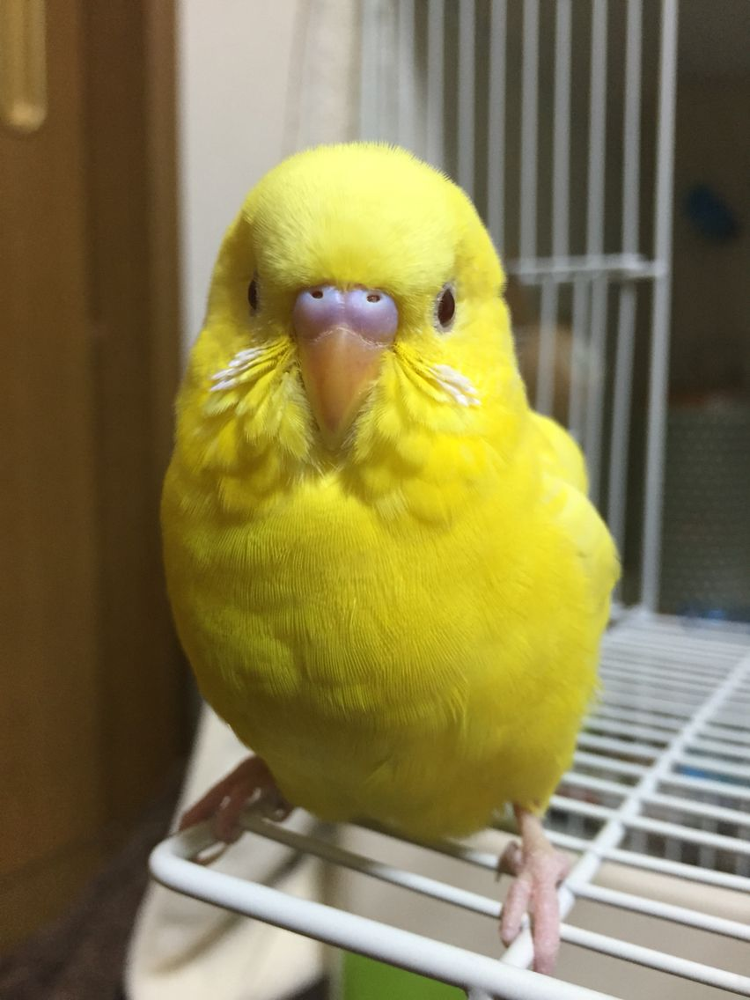
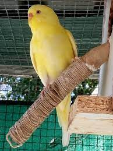
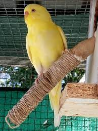
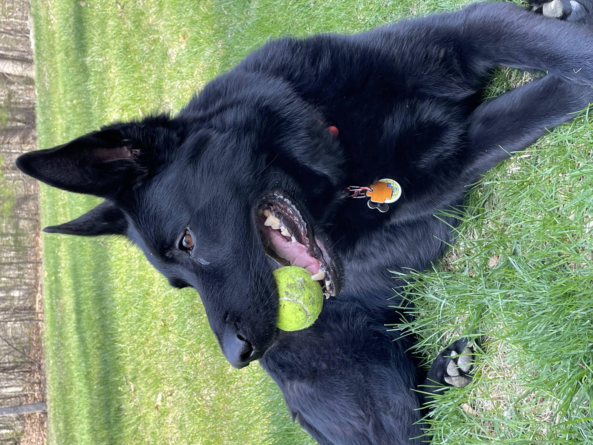
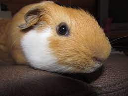
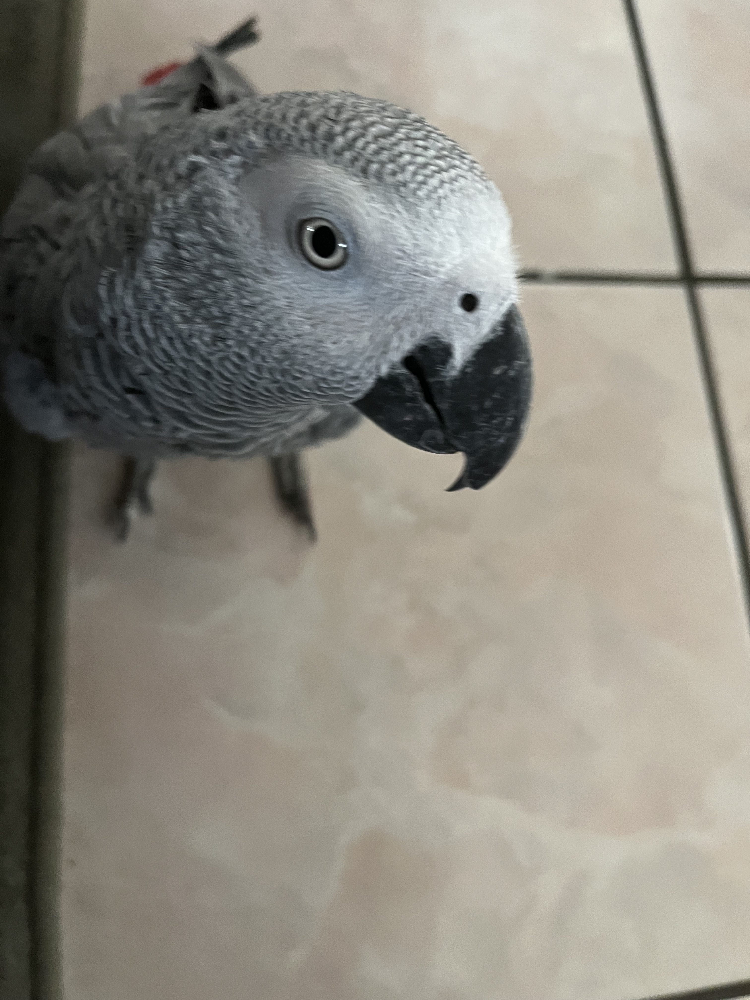
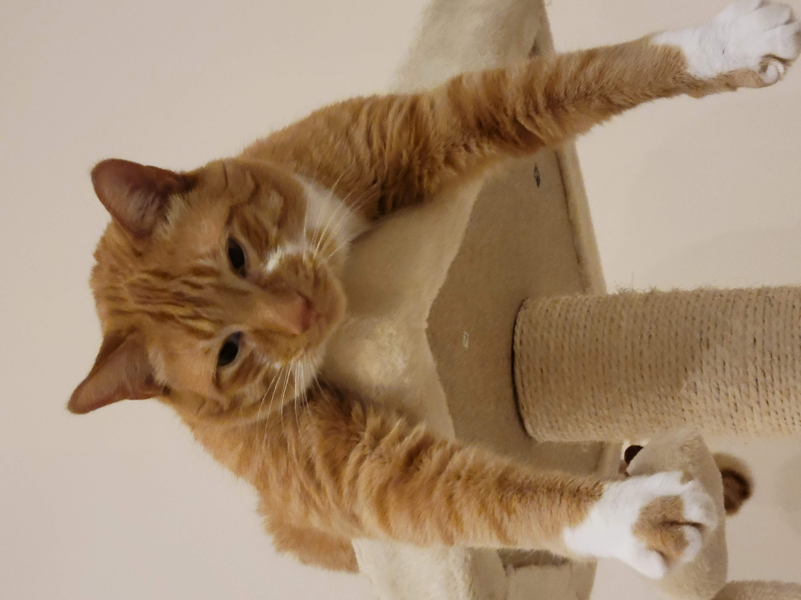

York
The pet is a budgie, a wonderfully social and cool animal. Initially, the bird might be a bit scared and require training. This process usually takes about 2 weeks of gradual interaction within its cage to help it become comfortable and accustomed to your presence. Afterward, you can progress to more direct approaches like placing your hand on the cage and offering treats from your hand.Once they've grown comfortable, the experience becomes quite enjoyable. Budgies thrive on social interaction and attention, delighting in playtime and engaging with people. They're open to learning tricks and can even be taught to talk due to their intelligence.

 


Likes:
- Fly
- Playing
- Seeds
York
Black German shepard. York loves to stay active and go on long walks by his house. He also enjoys chewing on his large assortment of toys. His favorite toy is his squeaky pig. York’s favorite food is sausage, but cheese is another favorite.
Likes:
- Food
- Playing
- Toys
Leo
Guinea pigs are naturally energetic animals, who spend up to 20 hours a day awake. Despite being awake for long periods of time, they naturally hide in their habitats, and can be difficult to see in their enclosures. Guinea pigs naturally are social creatures that enjoy socializing with other guinea pigs; in the wild, they form packs of five to ten. Leo is a half-lazy, half-lively guinea pig that either likes to run around on the floor, doing tiny hops, or likes to lay down in the cage for hours at a time nibbling at hay. His favorite hobby is eating, and he can tell whenever someone is about to give good to him by waiting at the end of the cardboard box patio he has attached to his cage.
Likes:
- Lettuce
- Tiny Hops
- Nap Time
Carlos

Carlos is a blue parakeet/budgerigar that my older sister adopted from her friend in high school. Carlos is 9 years old and loves flying around the kitchen and standing on chandeliers. She has very loud chirps and loves to chatter when people play instruments. Although she can be aggressive at times and is very unfriendly towards strangers, she has a very soft bite. Carlos has a sister named Einstein. We did not discover the genders of our pet birds until years after we named them. At night, Carlos always sleeps on her favorite yellow swing and will wake up in the same spot every morning in the upstairs of her cage ready to come out and play.


Likes:
- Spinach
- Flying around
- Taking baths
Zack
Zack is an African grey parrot, aged around three years old. Zack loves flying and being outside of the cage at all times. He’s very nice but bites so much. Zack’s favorite foods are unsalted sunflower seeds and mangos. He loves being able to sit on people’s shoulder and talking to them. Zack knows over 500 words and learns more every day.
Likes:
- Sunflower seeds
- Flying
- Going on walks
Cheeto (Chicken)
Cheeto is a cat who likes to eat a lot and play a lot. He has an obsession with his grandpa (human) and tries to get outside every single day. If he isn’t causing problems, he is usually hiding in a seven-foot-tall cat tree and sleeping. Another name for Cheeto is Chicken because sometimes he sits very scrunched up and ends up looking like a rotisserie chicken. He was nicknamed this by one of his friends, and now he understands it as his own name. He is about six years old and still acts like a younger cat, despite being middle-aged.
Milktea

Milktea is a Scottish fold with a personality of a princess. She loves her veggies and refuses to eat anything dropped on the ground. She makes it clear when she has a demand of any sort by complaining in a loud, distinguished manner. Despite her cuteness and royalty, she actually suffers from a genetic disorder intentionally brought upon by humans. I highly advise against keeping a Scottish fold because they are in constant pain when they reach around 2 years old. Cartilage accumulates around her paw joints and tail joints and it becomes painful for them to even walk. She is living evidence of humans' cruelty of breeding animals to look pretty while sacrificing the animals’ health.


Likes:
- Individual corn kernels served on human hands
- Sitting royally on suitcases to claim ownership of her humans
- Prefering to be alone and sitting on soft surfaces in her free time